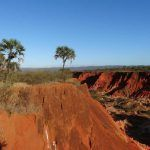
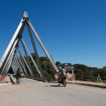
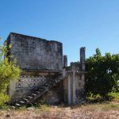
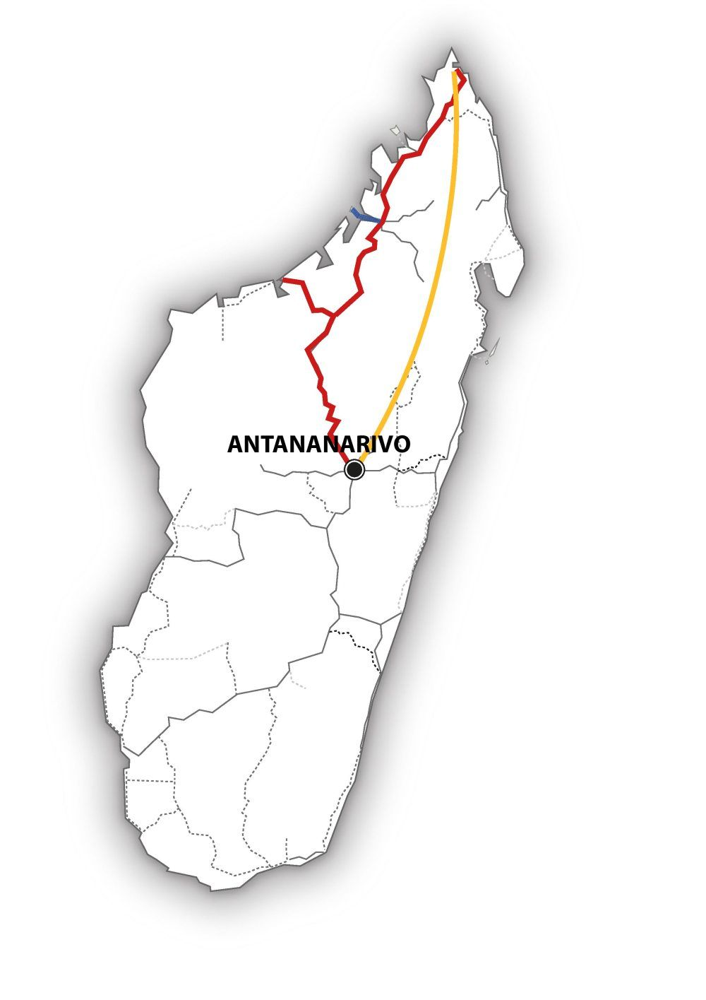

Madagascar – En route pour le Nord… – MG121
Le Nord de Madagascar est la destination ultime de cet intense voyage de 20 jours.
Traverser les immenses savanes et découvrir la forêt sèche de l’Ouest et ses lémuriens endémiques, visiter une étonnante île-prison tant redoutée dans le passé…
Se balader dans une forêt de montagne étonnamment fraîche et enfin… détente et plage dans les superbes baies du Nord …
Quelle aventure !
-

-

-

MG121 : Madagascar – En route pour le Nord…
L’essentiel : 
• Tsingy rouge et impressionnants Tsingy Ankarana
• Vivre la nature dans les brumes de la Montagne d’Ambre
• Frissons sur l’ìle-prison de Nosy Lava
Période :
Ce circuit est réalisable d’avril à décembre.
Itinéraire :
Antananarivo – Mahajanga – Ankarafantsika – Antsohihy – Analalava – Ankarana – Montagne d’Ambre – Diégo-Suarez – Antananarivo
Caractéristiques du circuit :
Région : Hauts-Plateaux, Nord
Contenu : nature et culture, plage
Condition physique : moyenne
Tous les détails de ce voyage au format PDF
Jour 1 : Vol depuis la Suisse
Tonga Soa à Madagascar ! Voici les mots de bienvenue de notre chauffeur à notre arrivée ! Il nous emmène à notre hôtel pour la première nuit.
Jour 2 : Antananarivo
En visite guidée de la capitale, apprenons à mieux la connaître : empruntons ses nombreux escaliers qui nous hisserons au sommet de l’une des 12 collines sacrées. Quel coup d’œil sur la ville !
Jour 3 : Antananarivo – Maevatanana
C’est parti ! Traversons les hautes terres arides de l’Ouest… La route sur les crêtes des collines nous dévoile de magnifiques paysages et les nombreuses pauses permettent d’admirer le rouge de la terre et le bleu du ciel infini… Etape à Maevatanana, porte de la Côte Ouest.
Jour 4 : Maevatanana – Mahajanga
Aujourd’hui, cap sur le Canal du Mozambique. Le paysage change, nous quittons la savane pour traverser de verdoyantes plaines de rizières et de plantations de tabac. Dans l’après-midi, nous arrivons à la ville animée de Mahajanga qui s’étale en bord de mer.
Jour 5 : Mahajanga
Mahajanga nous invite à la promenade, le long de ses larges rues, et à la visite de son marché animé. Découvrons également ses environs : plages à perte de vue, le lac sacré de Mangatsa – haut lieu de la culture Sakalava – et les roches colorées du « Cirque Rouge ».
Jour 6 : Mahajanga – Ankarafantsika
Aujourd’hui, la forêt sèche d’Ankarafantsika et ses nombreuses plantes, oiseaux, reptiles et lémuriens nous attendent. Nous allons nous en approcher au plus près…
Jour 7 : Parc national d’Ankarafantsika
Une journée entière dans le parc ! Prenons le temps de l’explorer avec un beau circuit de découverte de la faune et flore fascinantes de cette forêt protégée.
Jour 8 : Ankarafantsika – Antsohihy
Notre voyage se poursuit en direction du nord. Le paysage rappelle les safaris d’Afrique et les rizières d’Asie. Petits villages, charrettes de zébus aux roues cabossées, sans oublier les almiers, gardiens de la savane, nous accompagnent jusqu’à Antsohihy.
Jour 9 : Antsohihy — Analalava
Découvrons le paysage tranquille du fleuve Loza : un bateau nous emmène, trois heures durant, le long des manguiers et dans les mangroves noueuses jusqu’à son embouchure dans le Canal du Mozambique… Quel coup d’œil sur la mer ! Détente et balade le long d’un ruisseau (sec), puis flânons dans la tranquille Analalava et admirons les bâtisses coloniales de sa rue principale.
Jour 10 : Analalava – Nosy Lava
Aujourd’hui, faisons un saut dans le passé sur l’île de Nosy Lava. L’ancienne île-prison et sa plage de sable fin nous fait frissonner, alors que nous explorons les ruines en compagnie d’un ancien détenu qui nous raconte son histoire…
Jour 11 : Analalava
Passons encore une journée de détente sur ce calme et relaxant bord de mer… Profitons de ces environs fertiles, parfumés d’épices et de ce superbe cadre verdoyant…
Jour 12 : Analalava – Ambanja
Reprenons le bateau pour rejoindre la route et la direction du Nord. Traversons le Madagascar tropical, rencontrons ses habitants et observons la vie quotidienne dans cette région isolée…
Jour 13 : Ambanja – Parc national Ankarana
A Ambanja, explorons la région, ses palmiers, ses bananeraies et ses épices… Une plantation d’ylang-ylang nous accueille dans son enivrant parfum. Profitons d’admirer la vue sur les plantations de café et de cacao.
Jour 14 : Réserve spéciale d’Ankarana
Les sentiers de randonnées nous attendent ! Observons lémuriens, caméléons et plantes uniques. Nos yeux ébahis découvrent un spectacle exceptionnel, alors que nous traversons le pont suspendu de la forêt de pierre – les fameux Tsingy d’Ankarana – dont les aiguilles de calcaire s’élèvent jusqu’à 20m de hauteur.
Jour 15 : Parc national Ankarana – Tsingy Rouge – Montagne d’Ambre
Des Tsingy gris, passons aux Tsingy rouges, puis entrons dans un autre monde : celui de la brumeuse forêt de la Montagne d’Ambre…
Jour 16 : Montagne d’Ambre
Randonnons dans le domaine protégé de la Montagne d’Ambre, sur ses sentiers agréablement frais et riches en espèces de toutes sortes. Admirons les fines lianes qui bordent le chemin et nous mènent à de vaporeuses cascades issues du monde des esprits des eaux…
Jour 17 : Montagne d’Ambre – Diégo-Suarez – Ramena
Nous atteignons la vieille ville commerçante de Diégo-Suarez, à l’extrémité nord de Madagascar, puis poursuivons à destination de la plage de Ramena.
Jour 18 : Ramena – les 3 Baies
Depuis la mer, nous explorons les trois baies idylliques à l’est de Diégo-Suarez, nous arrêtons ici et là pour de courtes balades, puis pour un pic-nic sur la plage.
Jours 19 – 20 : Ramena – Diégo-Suarez – Antananarivo
Retour à Diégo où nous prenons l’avion pour la capitale. Nous en profitons pour une dernière visite de la ville avant de partir pour l’aéroport dans la soirée.